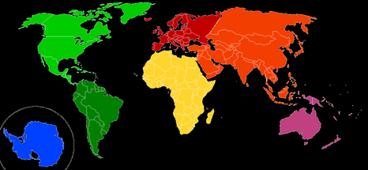
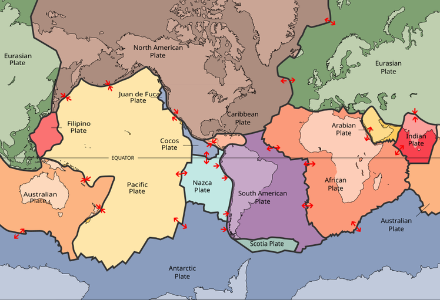

Five questions.
- What makes a fish a fish?
- What makes a continent a continent?
- What makes a country a country?
- What makes a vegetable a vegetable?
- What makes a sport a sport?
What makes a fish a fish?
-
Historically, animal groups (mammals, reptiles, birds, etc.) were
defined by convention and common traits.
-
Biologists later started classifying animals by common ancestry.
-
Animals we call "fish" are very far apart evolutionarily.
-
A common ancestor would also include all mammals.
That's a problem.
Let's ask Wikipedia.
A fish is an
aquatic,
anamniotic,
gill-bearing
vertebrate
animal
with a tough cranium to protect the brain,
but
lacking limbs with digits.
Included by the definition
Excluded by the definition
What makes a continent a continent?
Let's ask Wikipedia.
[...] Continents are generally identified by convention rather than any strict criteria. [...]
Well, thanks for nothing...
Let's use a classroom definition.
Continents are
large landmasses
separated from others by oceans.

Let's ask geologists.

What makes a country a country?
- 193 UN member states
- 7 additional partially recognized countries
- 206 participating countries at the Olympics
-
Our definition needs to include the Vatican and exclude Hong Kong.
Let's look at common characteristics.
- defined territory (or not)
- permanent population (or not)
- self-governing (or not)
- international recognition (or not)
- own currency (or not)
- independent military (or not)
Some edge cases
What makes a vegetable a vegetable?
Let's ask Wikipedia.
Vegetables are edible parts of plants that are consumed by humans or other animals as food.
How wonderfully vague...
Why is it so hard to define?
-
Because it's not a botanical term, but a culinary one.
-
In botany we differentiate between seeds, roots, stems, flowers, fruits... and that's it. No vegetables.
-
So saying "a tomato is a fruit, not a vegetable" is a category error.
Is there a culinary definition?
- In short: no.
-
Culinary classifications are not standardized and vary enormously between individuals and cultures.
-
The best "definition" I could find is: a plant we eat, but not for dessert.
Some edge cases
What makes a sport a sport?
Let's ask Wikipedia.
Sport is a physical activity
or game,
often
competitive and organized, that maintains
or improves
physical ability and skills.
That's not very helpful.
Let's look at common characteristics.
- form of physical activity (or not)
- competitive (or not)
- done for its own sake (or not)
- having clear rules (or not)
- social (or not)
Some edge cases
Five questions.
One answer.
-
What makes a fish a fish?
We do.
-
What makes a continent a continent?
We do.
-
What makes a country a country?
We do.
-
What makes a vegetable a vegetable?
We do.
-
What makes a sport a sport?
We do.
Categories compress information.
-
"Fish" saves you from listing every trait of every animal in the water.
-
"Vegetable" tells a cook roughly what to expect, in one word.
-
A category is a shared shortcut: we agree on it so we don't have to explain.
Compression is lossy.
-
A category hides differences between its members.
-
Hagfish and salmon are both "fish", yet they share less than salmon and humans do.
-
The edge cases are where the information gets lost.
When it stops compressing, discard it.
-
At the fishmonger, "fish" still works.
-
In evolutionary biology, it doesn't. Use clades instead.
-
Same word, different job. Keep it where it helps, drop it where it misleads.
Words are tools...
- Tools should make life easier.
- If they don't, they shouldn't be used.
- Specific tools are made for specific situations.
Inspired by...


.jpg){kind=link}
.jpg){kind=link}